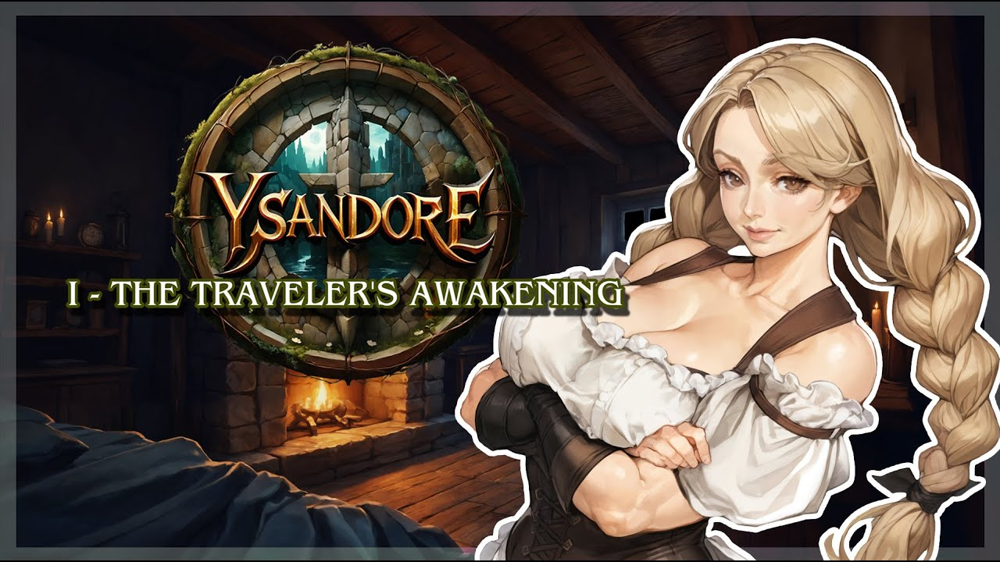

ğŸ Ysandore
📜 Taverne
🖼 Aventurier
🧙 Personnage d'histoire
📩 Contact
La Taverne
Bienvenue dans la taverne d'Ysandore ici tu pourras retrouvée surement des secrets, Des Histoires, Des légendes ou de simple rumeur qui sait ce qui est vrai ou faux a toi de le découvrir
